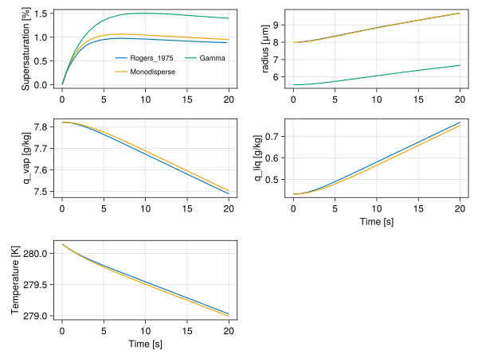
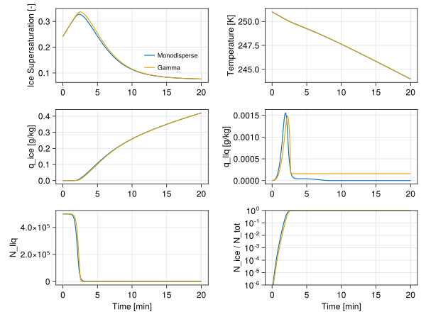

0-dimensional adiabatic parcel model
The model solves for saturation ratio in a 0-dimensional adiabatic parcel raising with constant velocity. It is based on [45], as well as the cirrus box model [46], [47] and is meant as a sandbox for testing different nucleation schemes.
We define liquid saturation ratio $S_l$
\[\begin{equation} S_l = \frac{e}{e_{sl}} \end{equation}\]
where:
- $e$ - is the partial pressure of water vapor,
- $e_{sl}$ - is the partial pressure of water vapor at saturation over liquid water.
Note that some models, for example [45], denote $S_l$ to be supersaturation $\frac{e}{e_{sl}} - 1$.
The change in saturation ratio can be described as
\[\begin{equation} \frac{dS_l}{dt} = \frac{1}{e_{sl}} \frac{de}{dt} - \frac{e}{e_{sl}^2} \frac{de_{sl}}{dt} \end{equation}\]
From ideal gas law the partial pressure of water vapor can be written as
\[\begin{equation} e = q_v p \frac{R_v}{R_a} \end{equation}\]
where:
- $q_v$ is the water vapor specific humidity
- $p$ is the air pressure
- $R_v$, $R_a$ are the gas constants for water vapor and air.
The change in partial pressure can be written as
\[\begin{equation} \frac{de}{dt} = \frac{dq_v}{dt} p \frac{R_v}{R_a} + q_v \frac{dp}{dt}\frac{R_v}{R_a} \end{equation}\]
From the Clausius–Clapeyron relation
\[\begin{equation} \frac{de_{sl}}{dt} = \frac{L_v e_{sl}}{R_v T^2} \frac{dT}{dt} \end{equation}\]
where:
- $L_v$ is the latent heat of vaporization,
- $T$ is the temperature.
From the moist adiabatic assumption
\[\begin{equation} \frac{dT}{dt} = \frac{R_a T}{c_p p} \frac{dp}{dt} + \frac{L_v}{c_p} \frac{dq_l}{dt} + \frac{L_s}{c_p} \frac{d q_i}{dt} \end{equation}\]
where:
- $q_l$ is the cloud liquid water specific humidity,
- $q_i$ is the cloud ice specific humidity,
- $L_s$ is the latent heat of sublimation.
From hydrostatic balance and assuming constant vertical velocity:
\[\begin{equation} \frac{dp}{dt} = -\frac{p g}{R_a T} w \end{equation}\]
where:
- $g$ is the gravitational acceleration
- $w$ is the constant vertical velocity.
Accounting for conservation of water, i.e. $\frac{dq_v}{dt} + \frac{dq_l}{dt} + \frac{dq_i}{dt} = 0$, and rearranging the terms
\[\begin{equation} \frac{dS_l}{dt} = a_1 w S_l - \left(a_2 + a_3 \right) S_l \frac{dq_l}{dt} - \left(a_2 + a_4\right) S_l \frac{dq_i}{dt} \end{equation}\]
where:
\[\begin{equation} a_1 = \frac{L_v g}{c_p T^2 R_v} - \frac{g}{R_a T} \end{equation}\]
\[\begin{equation} a_2 = \frac{1}{q_v} \end{equation}\]
\[\begin{equation} a_3 = \frac{L_v^2}{R_v T^2 c_p} \end{equation}\]
\[\begin{equation} a_4 = \frac{L_v L_s}{R_v T^2 c_p} \end{equation}\]
Saturation ratio over ice can then be related to $S_l$ by the relation
\[\begin{equation} S_i = \xi S_l \label{eq:supersat_relation} \end{equation}\]
where $\xi = \frac{e_{sl}}{e_{si}}$ is the ratio of saturation vapor pressure over liquid and saturation vapor pressure over ice.
The crux of the problem is modeling the $\frac{dq_l}{dt}$ and $\frac{dq_i}{dt}$ for different homogeneous and heterogeneous ice nucleation paths.
Condensation
The diffusional growth of individual cloud droplet is described by (see discussion),
\[\begin{equation} r_l \frac{dr_l}{dt} = \frac{1}{\rho_l} \, (S_l - 1) \, G_l(T) \end{equation}\]
where:
- $r_l$ is the droplet radius
- $\rho_l$ is the water density
- $G_l(T) = \left(\frac{L_v}{KT} \left(\frac{L_v}{R_v T} - 1 \right) + \frac{R_v T}{e_{sl} D} \right)^{-1}$ combines the effects of thermal conductivity and water diffusivity,
- $K$ is the thermal conductivity of air,
- $D$ is the diffusivity of water vapor.
Some formulations don't consider the $-1$ term in the denominator of G(T)
Assuming spherical water droplets, the change in droplet mass $m_l$ can be described as
\[\begin{equation} \frac{dm_l}{dt} = 4 \pi \rho_l r^2 \frac{dr_l}{dt} = 4 \pi r_l (S_l - 1) G_l(T) \end{equation}\]
Integrating over the assumed size distribution of droplets
\[\begin{equation} \frac{dq_l}{dt} = \frac{1}{V} \frac{1}{\rho_a} 4 \pi (S_l - 1) G_l(T) \int_{0}^{\infty} n(r) r dr = \frac{1}{\rho_a} 4 \pi (S_l - 1) G_l(T) N_{tot} \bar{r} \end{equation}\]
where:
- $N_{tot}$ is the total number concentration of droplets per volume of air $V$
- $\bar{r}$ is their mean radius
- $\rho_a$ is the density of air.
For a monodisperse distribution of droplets $n(r) = N_{tot} \delta(r-\bar{r})$, $\bar{r} = \left( \frac{3 \rho_a q_l}{4 \pi \rho_l N_{tot}} \right)^{1/3}$. For a gamma distribution of droplets $n(r) = A \; r \; exp(-\lambda r)$, $\bar{r} = \frac{2}{\lambda}$ where $\lambda = \left(\frac{32 \pi N_{tot} \rho_l}{q_l \rho_a}\right)^{1/3}$.
Deposition on dust particles
Similarly, for a case of a spherical ice particle growing through water vapor deposition
\[\begin{equation} \frac{dm_i}{dt} = 4 \pi \, r_i \, \alpha_m \, (S_i - 1) \, G_i(T) \label{eq:massratesphere} \end{equation}\]
where:
- $r_i$ is the ice particle radius,
- $\alpha_m$ is the accommodation coefficient that takes into account the fact that not all water vapor molecules that arrive at the particle surface will join the growing crystal,
- $G_i(T) = \left(\frac{L_s}{KT} \left(\frac{L_s}{R_v T} - 1 \right) + \frac{R_v T}{e_{si} D} \right)^{-1}$ combines the effects of thermal conductivity and water diffusivity,
The $r_i$ in eq. (\ref{eq:massratesphere}) should be replaced by the capacitance $C$, when considering non-spherical particles. For a sphere $C=r$, for a circular disc $C=2r/\pi$.
It follows that
\[\begin{equation} \frac{dq_i}{dt} = \frac{1}{\rho_a} \alpha_m 4 \pi (S_i - 1) G_i(T) N_{act} \bar{r} \end{equation}\]
where:
- $N_{act}$ is the number of activated ice particles.
$N_{act}$ can be computed for example from activated fraction $f_i$
\[\begin{equation} N_{act} = N_{aer} f_i \end{equation}\]
where:
- $N_{aer}$ is the number of available dust aerosol particles.
Immersion Freezing
Following the water activity based immersion freezing model (ABIFM), the ABIFM derived nucleation rate coefficient, $J_{immer}$, can be determined. The ice production rate,$P_{ice}$, per second via immersion freezing can then be calculating using
\[\begin{equation} P_{ice} = [\frac{dN_i}{dt}]_{immer} = J_{immer}A(N_{liq}) \label{eq:ABIFM_P_ice} \end{equation}\]
where $N_{liq}$ is total number of ice nuclei containing droplets and $A$ is surface area of those droplets.
Example figures
Here we show example simulation results from the adiabatic parcel model with deposition freezing on dust. The model is run three times for 30 minutes simulation time, (shown by three different colors on the plot). Between each run the water vapor specific humidity is changed, while keeping all other state variables the same as at the last time step of the previous run. The prescribed vertical velocity is equal to 3.5 cm/s. Supersaturation is plotted for both liquid (solid lines) and ice (dashed lines).
include("../../parcel/Tully_et_al_2023.jl")CairoMakie.Screen{SVG}

In the plots below, the parcel model is ran with only condensation (no ice or freezing) assuming either a monodisperse or a gamma distribution of droplets. It is compared to [31].
include("../../parcel/Liquid_only.jl")CairoMakie.Screen{SVG}

The plots below are the results of the adiabatic parcel model with immersion freezing, condensation growth, and deposition growth for both a monodisperse and gamma size distribution. Note that this has not yet been validated against literature.
include("../../parcel/Immersion_Freezing.jl")CairoMakie.Screen{SVG}
